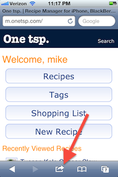
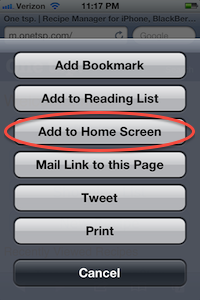
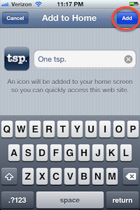
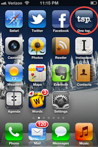

Even though we don't provide a native iOS app, you can still install an icon for One tsp. on your iPhone or iPad home screen to give you quick access to your recipes and shopping lists.
These instructions are probably similar for Android devices, but feel free to send me updates or details if they vary greatly.
Open Safari on your iPhone or iPad.
Open the web address http://onetsp.com.
Click the "share" button in Safari (it looks like an arrow coming out of box).
Click the "Add to Home Screen" button.
Edit the name of the new icon (if you prefer), then click the "Add" button.
The new One tsp. icon should appear on your home screen.
